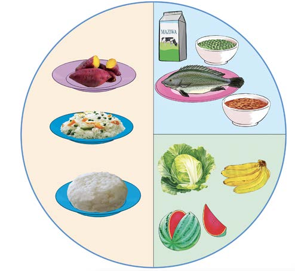

Vyakula vya kuupa mwili nguvu

Maelezo ya picha: Makundi ya vyakula katika mlo kamili: vya kuupa mwili nguvu, vya kujenga mwili, na vya kulinda mwili. Mfano wake ni wali, viazi vitamu, maziwa, samaki, maharage, kabichi, ndizi na tikiti maji.Vyakula vya kujenga mwili
Vyakula vya kulinda mwili
Kielelezo namba 9: mlo kamili wa mtu anayefanya kazi za kutumia nguvu nyingi.
Kazi ya kufanya namba 4
Tumia maktaba, matini mtandao au vyanzo vingine vya taarifa kutafuta taarifa kuhusu mlo kamili kwa watu wanaofanya kazi za kutumia nguvu nyingi.
Pangilia mlo kamili wa asubuhi, mchana na jioni kwa mtu anayefanya kazi za kutumia nguvu nyingi.
Wagonjwa
Mlo kamili kwa mgonjwa ni muhimu ili kuimarisha kinga ya mwili inayoweza kupambana na maradhi. Mlo huu pia, humsaidia mgonjwa kupata nguvu na virutubisho muhimu. Wagonjwa wanapaswa kupewa kiasi kikubwa cha vyakula vya kujenga na kulinda mwili. Vyakula hivyo husaidia kurejesha seli zilizoharibika kutokana na mashambulizi ya magonjwa. Pia,